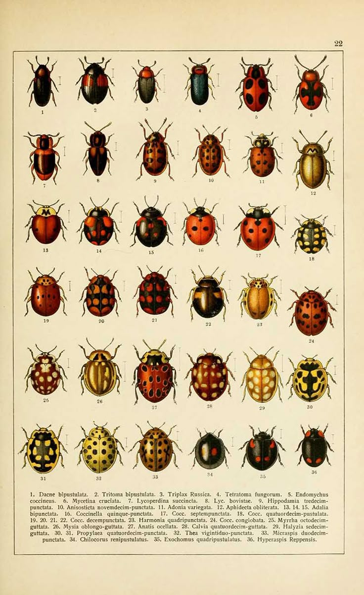
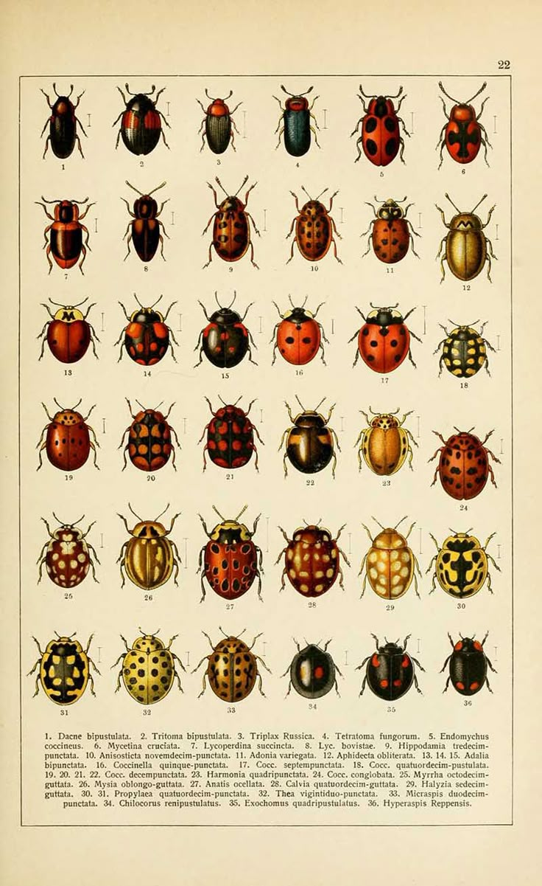

Autism is a neurodevelopmental condition characterised by differences in social communication and interaction, alongside restricted and repetitive patterns of behaviour, interests, or activities. It is defined as "the range of differences in individual brain function and behavioural traits, regarded as part of normal variation in the human population" (American Psychiatric Association, 2013).
Autism is not a linear spectrum but rather made up of many aspects that are affected differently.
Image space for autism spectrum visualization
Neurodiversity is defined as:
"the range of differences in individual brain function and behavioural traits, regarded as part of normal variation in the human population"
Image space for autism definition visualization
Sensory input is captured via receptors:
External Stimuli:
Internal Stimuli:
(Galiana-Simal et al., 2020)
Input is transformed into sensory information that is sent to the brain, which determines motor and behavioural responses.
Perceptual experience is influenced by:
Formed using Bayesian decision theory:
Pellicano and Burr's account assumes that perceptual atypicalities occur because autistic people are less influenced by their prior knowledge.
(Pellicano and Burr, 2012)
Sensory differences can be different experiences with our senses:
These experiences can change interactions and how someone physically feels.
Sensory difference are not specific to autistic people, people with ADHD, OCD or developmental delays can have them too.
He et al., developed a taxonomy that differentiates between levels of sensory differences experienced by autistic people.
Image space for He et al. taxonomy visualization 1
Image space for He et al. taxonomy visualization 2
Dunn proposed a model pertaining to 4 basic patterns of sensory processing which come from the neurological threshold and self-regulation.
Image space for Dunn's model visualization 1
Image space for Dunn's model visualization 2
(Crane et al 2009; Tavassoli et al, 2016; MacLennan, O'Brien et al., 2021)
Prevalence:
Image space for sensory processing statistics visualization
Hyperreactivity is showing high sensitivity to a stimulus
Hyporeactivity is being unresponsive to a stimulus
Seeking is the search for the experiences and feelings in response to a stimulus
Image space for sensory processing definitions visualization
"Anxiety is a feeling of unease, such as worry or fear, that can be mild or severe. Everyone has feelings of anxiety at some point in their life. For example, you may feel worried and anxious about sitting an exam or having a medical test or job interview." (NHS Inform, 2022)
Anxiety is the main symptom of several conditions, including:
(NHS, 2018)
Research suggests that anxiety is more common in autistic people.
(Nimmo-Smith et al., 2020; Lugnegård et al., 2011; Van Steensel et al., 2011)
Autistic people are also known to show unique anxiety conditions alongside the traditional anxiety presentations:
Kerns et al., 2014
Found that 63% of ASD youth presented with impairing anxiety:
Image space for Kerns et al. anxiety findings visualization
Unique anxiety presentations include:
Research into the anxiety and possible sensory triggers in autistic people can help us to understand and research causes of autism and intervention treatment.
Most research focuses on Sensory Over-Reactivity in autistic people, but I want to focus on research that looks into all the different types of sensory reactivity differences.
This approach is more beneficial and progressive than only focusing on hyperreactivity.
The Relationship Between Sensory Reactivity Differences and Anxiety Subtypes in Autistic Children
The study used 41 autistic children (who all had a clinical diagnosis) aged 3–14 using parent and self-report measures to report anxiety and sensory differences.
Findings:
Positives:
Negatives:
However, this study only focuses on children…
The Perceived Causal Relations Between Sensory Reactivity Differences and Anxiety Symptoms in Autistic Adults
The study used 246 autistic adults aged 18–76 in an online study.
Used self-report assessments of sensory reactivity differences and anxiety, followed by a perceived causal relations scale to indicate whether they thought their sensory reactivity differences were more of a cause or an effect of their anxiety symptoms.
Findings:
Positives:
Negatives:
There are many studies that look into the relationship between sensory differences and anxiety in autistic people.
I think these two studies are the most useful in understanding the direction of research, whereas earlier studies tend to focus only on hyperreactivity and sensory over-reactivity.
These papers explore the variations in sensory reactivity.
A lot more research needs to be done, as these studies have limitations. However, it seems that understanding the relationship between sensory processing differences and anxiety in autistic people is key to developing effective interventions.
Crane, L., Goddard, L., & Pring, L. (2009). Sensory processing in adults with autism spectrum disorders. Autism: The International Journal of Research and Practice, 13(3), 215–228. https://doi.org/10.1177/1362361309103794
Dunn's Model of Sensory Processing | OT Theory. (2018). OT Theory. https://ottheory.com/therapy-model/dunns-model-sensory-processing
Galiana-Simal, A., Vela-Romero, M., Romero-Vela, V. M., Oliver-Tercero, N., García-Olmo, V., Benito-Castellanos, P. J., Muñoz-Martinez, V., & Beato-Fernandez, L. (2020). Sensory processing disorder: Key points of a frequent alteration in neurodevelopmental disorders. Cogent Medicine, 7(1). https://doi.org/10.1080/2331205x.2020.1736829
He, J. L., Williams, Z. J., Harris, A., Powell, H., Schaaf, R., Tavassoli, T., & Puts, N. A. J. (2023). A working taxonomy for describing the sensory differences of autism. Molecular Autism, 14(1). https://doi.org/10.1186/s13229-022-00534-1
Kerns, C. M., Kendall, P. C., Berry, L., Souders, M. C., Franklin, M. E., Schultz, R. T., Miller, J., & Herrington, J. (2014). Traditional and atypical presentations of anxiety in youth with autism spectrum disorder. Journal of Autism and Developmental Disorders, 44(11), 2851–2861. https://doi.org/10.1007/s10803-014-2141-7
MacLennan, K., O'Brien, S., & Tavassoli, T. (2021). In our own words: The complex sensory experiences of autistic adults. Journal of Autism and Developmental Disorders, 52. https://doi.org/10.1007/s10803-021-05186-3
National Institute of Mental Health. (2022, March). Autism spectrum disorder. National Institute of Mental Health (NIMH). https://www.nimh.nih.gov/health/topics/autism-spectrum-disorders-asd#:~:text=Autism%20Spectrum%20Disorder-
Pellicano, E., & Burr, D. (2012). When the world becomes "too real": A Bayesian explanation of autistic perception. Trends in Cognitive Sciences, 16(10), 504–510. https://doi.org/10.1016/j.tics.2012.08.009
Tavassoli, T., Bellesheim, K., Siper, P. M., Wang, A. T., Halpern, D., Gorenstein, M., Grodberg, D., Kolevzon, A., & Buxbaum, J. D. (2016). Measuring sensory reactivity in autism spectrum disorder: Application and simplification of a clinician-administered sensory observation scale. Journal of Autism and Developmental Disorders, 46(1), 287–293. https://doi.org/10.1007/s10803-015-2578-3
Verhulst, L., Bos, M. G. N., Greaves-Lord, K., & Hillegers, M. (2022). The perceived causal relations between sensory reactivity differences and anxiety symptoms in autistic adults. Autism Research, 15(9), 1718–1729. https://doi.org/10.1002/aur.2772